| |
Hydra Review
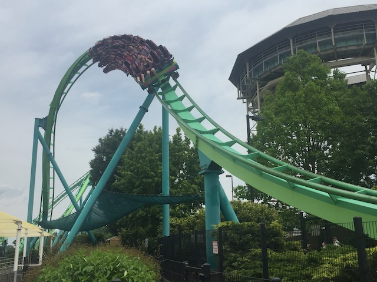
We're here at Dorney Park. Today's ride we'll be reviewing for you is Hydra. Now this is a very interesting roller coaster. It has a very strange layout for a B&M Floorless coaster, and many people accuse it of being a very forceless coaster. After getting in the cars, the airhorn blows, the floor drops, and the gates open, and we are on our way. Well, Hydra rolls out of the station, just cruising along, when we roll straight into the Jo Jo Roll. The Jo Jo Roll, for those who don't know is a very slow inline twist taken before the lifthill. Yeah. This has one of the best prelifts on any coaster anywhere. And not only that, but the Jo Jo Roll kicks total ass. You get some serious hangtime there. You really feel upsidedown. Far more upsidedown than your typical inversion where you just roll through it and don't really notice the fact that you are upsidedown. Here, you know it and can feel it. So yeah, we're off to a great start. After that, we roll around a turn and head up the lifthill. It's not very big nor very interesting. Just your typical everyday lifthill. Once we finish that we go down the first drop. Now from offride, it doesn't look that special. Just an average pretty small first drop. But onride, it is pretty cool and picks up quite a lot of speed despite being so small. And hell, in the backseat, you even get some minor ejector air. And who doesn't enjoy that? After that, we head straight into the inclined dive loop. Now I know I'm going off on a tangent here, but this DOES NOT count as an inversion. I'm pretty lenient in my definition of what is and isn't an inversion. But this simply does not make the cut. It's not an inversion, it's just an overbanked turn. If this counts, then so do the overbanked turns on Millenium Force and Xcelerator. So really, Hydra only has 6 inversions, not 7. But whatever. The element is fun and has some decent hangtime. That's what really matters (Ok, that's enough pointless rollercoaster nerdiness crap for this review). Anyways, we then make our way into the Heartline Spin. Now I will admit. The Heartline Spin on Hydra is not at all like the typical B&M Heartline Spin that just whips you through and gives you a crazy ride. But it's still pretty damn cool. You know that stuff that B&M says about Zero Gs in a Zero G Roll or Heartline Spin, but you never feel 0 Gs, you just feel that lateral twist of insanity. Well on Hydra, you literally feel Zero Gs. You literally feel light as the world rotates upsidedown and back around you. It's like Silver Bullet's Heartline Spin, only awesome because you have less force and everything moving around you. This then takes you to what seems like a cross between another Heartline Spin and a corkscrew. It's sort of like Tatsu's first inversion. It even feels like it too with it's floatiness and grace. After that, we head into the inclined cobra roll. Yep, this is just another one of the things that makes Hydra so cool. An inclined Cobra Roll. Well, I like Inclined Loops and I like Cobra Rolls. So this combo is pretty damn cool with me. Plus, you get some laterals in the inclined cobra roll (You don't snap through and get laterals, but rather you slide in your seat, which is still pretty damn cool). After that, we head up into a bunny hop hill/turn. So we get some floater air and some laterals at the same time. Which really kicks some good ass. We then head through another bunny hop. This one doesn't have floater air, but it's still cool. After that, we head through a corkscrew. And despite what everyone says, it has force!!! This corkscrew does have some whip to it!!! Now granted, it's not Kumba like or anything crazy, but it's still enjoyable. We then roll through a banked turnaround. It's not insane, but it's fun. We then pretty much meander back over to the station. So yeah. The best way to really describe Hydra is that basically, it's like Slow Riddlers Revenge. It's slow, but it kicks ass!!! I would TOTALLY recommend you ride Hydra while at Dorney Park. It may not be the best B&M coaster ever, but it sure is one of the most unique and is one of the star attractions of Dorney Park.
8/10
Location: Dorney Park
Opened: 2005
Built by: B&M
Last Ridden: June 19, 2021
Hydra Photos
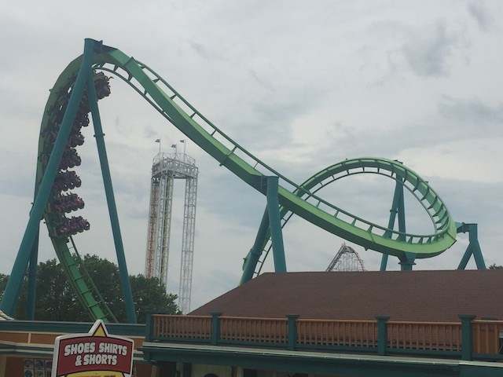
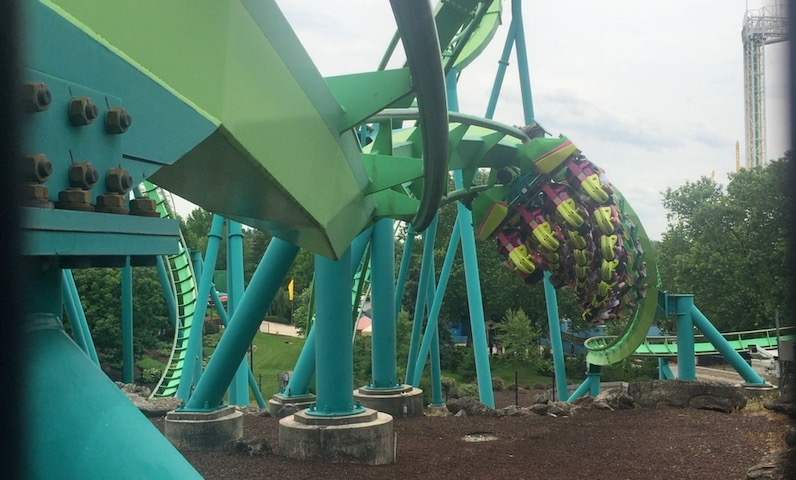
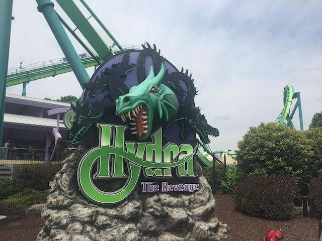
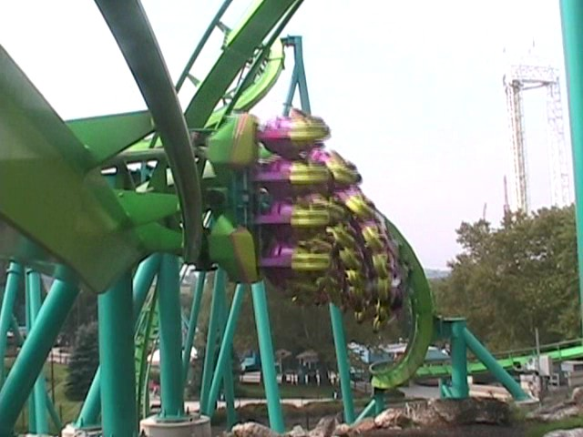
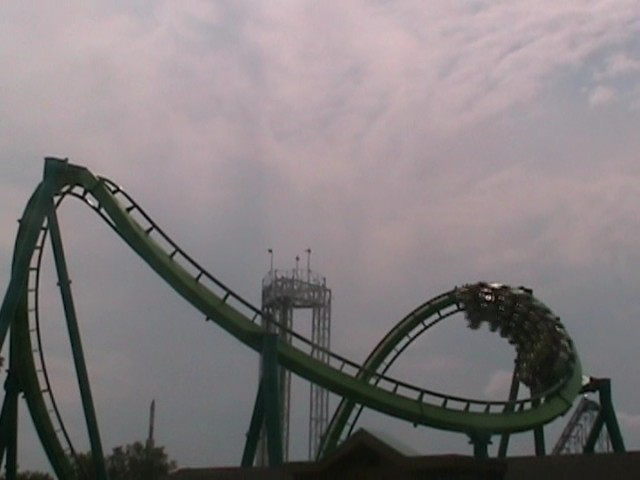
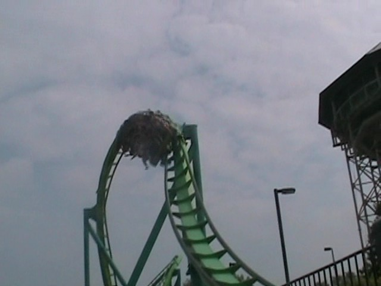
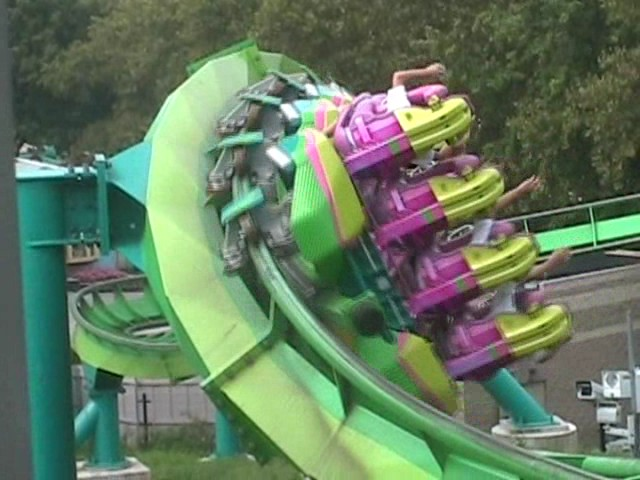
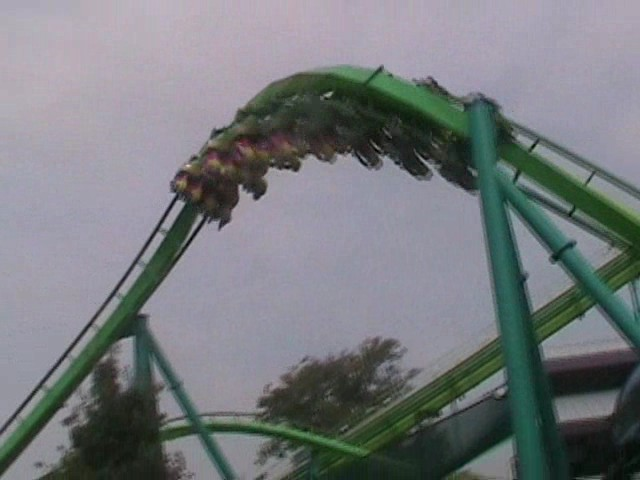
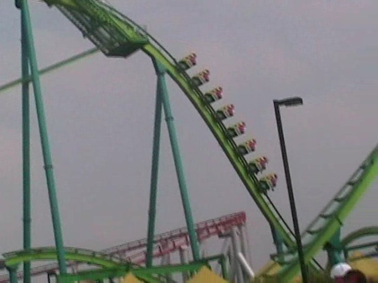
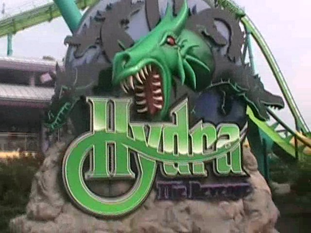
Home
|